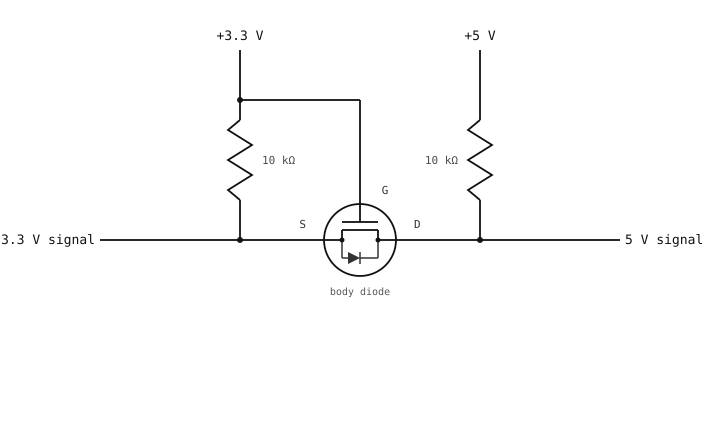

3.8. Konwersja poziomów napięć¶
Pin GPIO kamery w stanie wysokim wystawia napięcie około 3,3 V. Urządzenie po drugiej stronie może pracować przy 5 V (starsze mikrokontrolery, wiele płytek z sensorami) lub 1,8 V (nowsze sensory, niektóre magistrale chip-to-chip). Bezpośrednie połączenie obu stron bywa bezpieczne, a bywa destrukcyjne; konwersja poziomów napięć to układ, który niezawodnie pokonuje tę różnicę.
3.8.1. Dlaczego bezpośrednie sterowanie napięciem o niezgodnym poziomie może uszkodzić pin¶
Pole I/O każdego układu ma parę wbudowanych diod zabezpieczających: jedną od pinu do masy, drugą od pinu do szyny zasilania układu. Mają one pochłaniać wyładowania elektrostatyczne (ESD) – krótki impuls wysokiego napięcia pochodzący z elektryczności statycznej, który może trafić w pin podczas dotykania płytki. Osoba, która przeszła po dywanie, może nosić kilka kilowoltów ładunku statycznego; dotknięcie niewłaściwego pinu przenosi ten ładunek do układu w ciągu nanosekund. Górna dioda zabezpieczająca przechodzi w stan przewodzenia w kierunku przewodzenia i bezpiecznie odprowadza impuls do szyny zasilania, zanim dotrze on do tranzystorów wewnątrz układu.
Gdy sygnał 5 V jest przykładany w sposób ciągły do pinu 3,3 V, który nie jest odporny na 5 V, górna dioda zabezpieczająca przewodzi bez końca. Diody są dobrane do krótkich impulsów ESD, a nie do prądu w stanie ustalonym; napięcie szyny zasilania zaczyna rosnąć powyżej 3,3 V, dioda się nagrzewa i ostatecznie uszkodzeniu ulega albo pin, albo wbudowany stabilizator napięcia.
Piny odporne na 5 V używają innego stopnia wejściowego – górna dioda prowadzi do wyższej szyny lub jej nie ma – więc przyłożenie 5 V jest nieszkodliwe. To, czy piny danej płytki są odporne na 5 V, zależy od płytki; sprawdź Krótki przewodnik po OpenMV Cam.
Drugi kierunek ma swój własny problem. GPIO 3,3 V sterujące w stanie wysokim daje na przewodzie ~3,3 V. Odbiornik 5 V, który do rozpoznania stanu wysokiego wymaga 0.7 × Vcc, ma swój próg na poziomie 3,5 V; 3,3 V może zostać odczytane jako stan niski lub niejednoznaczny. Nawet bez uszkodzeń sygnał nie działa niezawodnie.
Konwerter poziomów rozwiązuje problem w obu kierunkach.
3.8.2. Tranzystor N-MOSFET jako przełącznik¶
Poniższe układy wykorzystują pojedynczy tranzystor MOSFET z kanałem N. Ma on trzy piny – bramkę (gate), dren (drain) i źródło (source) – i zachowuje się jak przełącznik sterowany elektrycznie.
Wejściem sterującym jest napięcie pomiędzy bramką a źródłem, oznaczane Vgs (napięcie bramka-źródło):
Vgs = (gate voltage) - (source voltage)
MOSFET reaguje na tę różnicę, a nie na napięcie bezwzględne na którymkolwiek z pinów osobno. Jego zachowanie wynika z Vgs:
Gdy
Vgsjest wyższe niż napięcie progowe tranzystora MOSFET (zazwyczaj około 1 V dla małosygnałowego elementu o poziomie logicznym), tranzystor włącza się i prąd płynie swobodnie od drenu do źródła.Gdy
Vgsjest równe lub niższe od 0, tranzystor wyłącza się i prąd od drenu do źródła praktycznie nie płynie.
Ścieżka dren-źródło to przełączana ścieżka prądowa; Vgs otwiera lub zamyka ten przełącznik.
N-MOSFET ma również diodę pasożytniczą pomiędzy drenem a źródłem, która przewodzi, gdy dren zostanie ściągnięty poniżej źródła o więcej niż ~0,6 V. Dioda ta jest efektem ubocznym procesu produkcyjnego; dwukierunkowy konwerter opisany poniżej wykorzystuje ją celowo.
3.8.2.1. Zasady połączeń¶
N-MOSFET nie jest symetrycznym elementem trójkońcówkowym. Dioda pasożytnicza jest skierowana od źródła (anoda) do drenu (katoda), a kanałem steruje Vgs. Wynikają z tego dwie zasady, które muszą być spełnione w każdym układzie przełącznika opartym na N-MOSFET:
Źródło łączy się z niższym napięciem; dren z wyższym. Gdy dren jest podłączony do wyższej szyny, dioda pasożytnicza jest spolaryzowana zaporowo i nie robi nic. Zamień je miejscami, a dioda pasożytnicza będzie spolaryzowana w kierunku przewodzenia przez cały czas: prąd popłynie od teraz-wyższego źródła przez diodę pasożytniczą do teraz-niższego drenu, niezależnie od tego, co robi bramka. MOSFET przestaje być przełącznikiem – przewodzi w sposób ciągły, sygnału nie można wyłączyć, a element często się przegrzewa i ulega uszkodzeniu.
Bramka łączy się z szyną napięcia źródła. Utrzymanie bramki na szynie, na której spoczywa źródło w stanie spoczynku, daje
Vgs = 0w stanie jałowym, znacznie poniżej progu; MOSFET pozostaje pewnie wyłączony, dopóki coś nie wymusi na bramce napięcia wyższego niż źródło (jednokierunkowy układ poniżej) albo nie ściągnie źródła poniżej bramki (układ dwukierunkowy). Pozostaw bramkę swobodną gdzie indziej, a stan wyłączenia przestaje być zdefiniowany – szum, prądy upływu lub pojemności pasożytnicze mogą sprawić, żeVgsprzekroczy próg i przypadkowo włączy MOSFET.
Odwrócenie którejkolwiek z tych zasad zamienia konwerter poziomów w przewodzącą upływnościowo, niezawodną ścieżkę. Oba poniższe układy konwerterów przestrzegają tych zasad: źródło po niższej stronie, dren po wyższej, bramka połączona lub sterowana z szyny źródła.
3.8.3. Jednokierunkowy 3,3 V → 5 V¶
Najprostszy konwerter poziomów przepycha jednokierunkowy sygnał z GPIO kamery na wejście 5 V. Wystarczy do tego pojedynczy N-MOSFET i dwa rezystory.

N-MOSFET konwertuje poziom (i odwraca) sygnał 3,3 V na wyjście 5 V.¶
Gdy GPIO steruje w stanie wysokim (3,3 V na bramce), Vgs jest powyżej progu i MOSFET się włącza; dren zostaje ściągnięty do ~0 V. Gdy GPIO steruje w stanie niskim (0 V na bramce), MOSFET jest wyłączony, a rezystor podciągający 10 kΩ podnosi dren do 5 V.
Wyjście jest odwrotnością wejścia. Oprogramowanie może odwrócić sygnał z powrotem (zapisać 0, aby uzyskać „wyjście 5 V w stanie wysokim”), albo można skaskadować dwa stopnie, aby uzyskać sygnał nieodwrócony przy dwukrotnie większej liczbie elementów.
3.8.4. Dwukierunkowy z jednym N-MOSFET¶
Dla linii, którą trzeba sterować z dowolnej strony – współdzielonej magistrali, gdzie każdy koniec może ściągnąć linię w dół – standardowym układem jest pojedynczy N-MOSFET na linię, z jednym rezystorem podciągającym do zasilania każdej ze stron.

Pojedynczy N-MOSFET łączy linię 3,3 V i 5 V; każda strona ma własny rezystor podciągający.¶
Bramka jest połączona z zasilaniem 3,3 V, więc zachowanie tranzystora MOSFET zależy od tego, która strona steruje:
Obie strony w stanie jałowym. Źródło spoczywa na 3,3 V dzięki lewemu rezystorowi podciągającemu; bramka jest na 3,3 V;
Vgs = 0; MOSFET jest wyłączony. Strona 5 V dryfuje do 5 V dzięki prawemu rezystorowi podciągającemu. Obie strony odczytują stan wysoki.Strona 3,3 V ściąga w dół. Źródło spada do 0 V;
Vgsrośnie powyżej progu; MOSFET włącza się i przewodzi od źródła do drenu. Strona 5 V zostaje ściągnięta w dół przez tranzystor.Strona 5 V ściąga w dół. Dren spada do 0 V; dioda pasożytnicza tranzystora MOSFET (od drenu do źródła) zostaje spolaryzowana w kierunku przewodzenia i zaczyna przewodzić; źródło (strona 3,3 V) zostaje ściągnięte do około 0,6 V.
Vgsprzekracza wówczas próg i MOSFET włącza się w pełni, sprowadzając obie strony do stanu niskiego.
BSS138 to standardowy N-MOSFET dla tego schematu; małosygnałowe N-MOSFET-y o poziomie logicznym i podobnym napięciu progowym bramki zachowują się tu wszystkie tak samo.